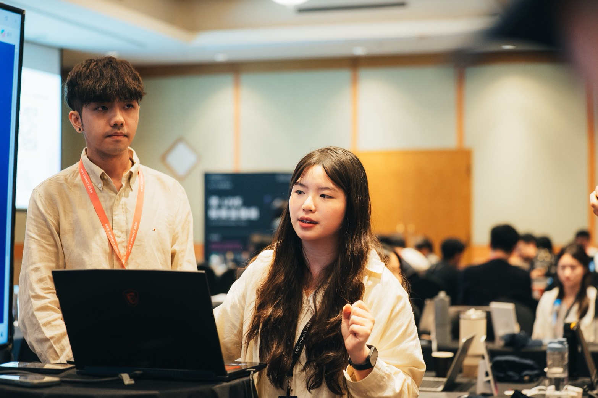
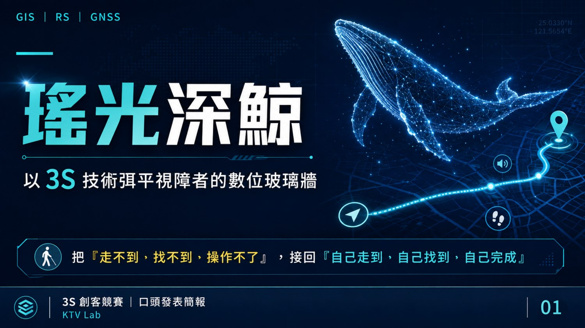

1ST
2026 AI Cabin Perception & Visualization Hackathon
TapAble’s “The Alert Finds Your Eyes” explores how cabin information can actively reach the person who needs it.
IDEAS WE TURNED INTO PROJECTS
I enjoy the time pressure and uncertainty of competitions. Together with teammates, I turn user needs, data insights and AI prototypes into work that can be seen, tested and questioned further.
NEW ACHIEVEMENTS
TapAble’s “The Alert Finds Your Eyes” explores how cabin information can actively reach the person who needs it.
TapAble extends AI and accessible service design to make public kiosks and digital services more independently usable.
Team Future Shadow proposed the Taipei Shadow Work Order Plan so early work experience can be recorded and understood.
Still Answering brought a space-and-human story to life through a website, demo flow and short pitch video.
Yaoguang Whale TapAble presents an integrated AI, NFC and accessible kiosk service through its finalist poster.
WORK IN PROGRESS
These labels show the current stage without turning advancement into an award before the result is known.
RobinSave: an on-device voice-AI scam-call simulator running on ASUS UGen300.
Team “Misfortune Doesn’t Travel Alone” is continuing its policy proposal and final build.
Developing TapAble’s venture story, user needs and business model.
yoxi Companion is in final-deck, seven-minute pitch and jury-Q&A preparation.
Team Robin Guardian explores interactive insurance communication through InsureDrama.
KTV LAB shaped its design problem, prototype and next step into a Pecha Kucha pitch.
SELECTED ARCHIVE
Open a project for the problem, my role, the tools and the public presentation materials.

Brand & business · May 2026
Cypress Connections
Connecting reviews, store observation, family needs and membership.

AI & build · Sep 2026
ChatKTV
A three-day cross-disciplinary sprint from idea to demonstrable prototype.

AI & build · Jul 2026
PressPlay AI+
Gamification, proactive diagnosis and AI companionship for learning continuity.

Brand & business · Jan 2026
Insurance Bus
A LINE insurance journey grounded in Gen-Z life situations.

Social innovation · Jun 2026
Yaoguang Whale
Supporting independent use of public kiosks for visually impaired users.

AI & build · Aug 2026
Rent Radar & AI learning platform
Two interactive prototypes addressing rental and learning information problems.

Social innovation · Sep 2026
TapAble
Linking location, voice interaction and outcome feedback through interviews.

Social innovation · Aug 2026
Yaoguang Whale: 3S Navigation
Extending accessibility into orientation, positioning and independent use.

Social innovation · Jul 2026
Family Translator
Using photos and voice to narrow the digital distance between generations.

Social innovation · Apr–May 2026
BEACON
Exploring more natural ways for young people to reach mental-health support.

Brand & business · Dec 2024
Jin Yun Awards
Brand promotion and participation design for a maternity and baby industry award.